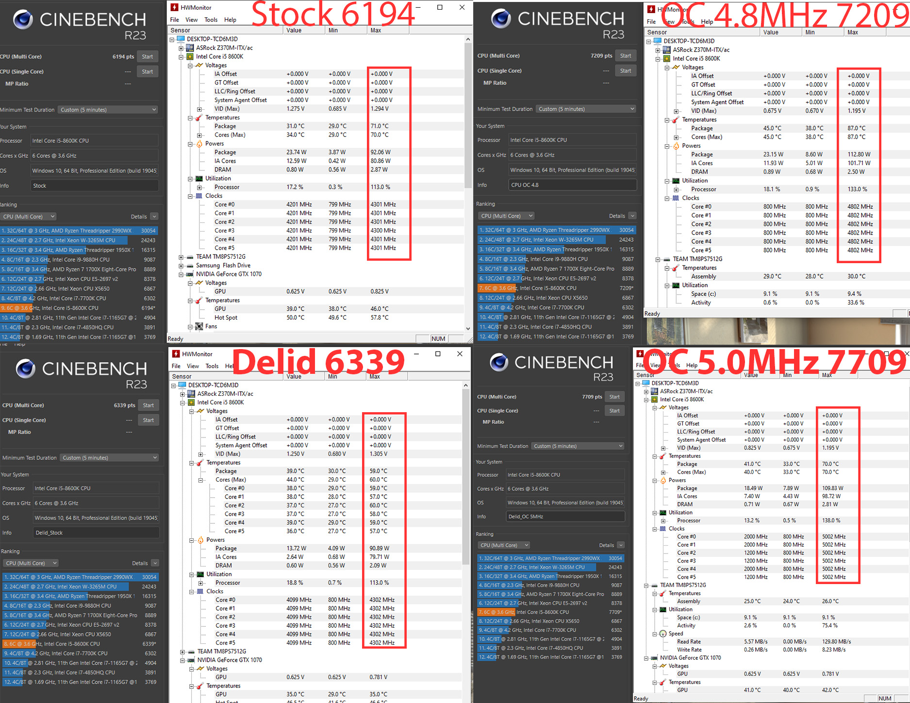

Delidding the Intel® Core™ i5-8600K
Unlock the full potential of your Intel® Core™ i5-8600K processor by delidding it. This process involves removing the integrated heat spreader (IHS) and replacing the stock thermal interface material (TIM) with high-performance liquid metal. The result is significantly improved thermal performance, which allows for better overclocking and stability.
What is Delidding?
Delidding is the process of removing the IHS of a CPU. The IHS is a metal lid that covers the CPU die, helping to spread the heat generated by the processor. By removing it and applying a better thermal compound, we can achieve lower temperatures and higher performance.
Benefits of Delidding:
- Lower CPU temperatures
- Improved overclocking potential
- Increased system stability
- Longer CPU lifespan
Important Considerations:
Delidding can void your CPU warranty and carries a risk of damaging your processor if not done correctly. It is recommended for experienced enthusiasts who understand the risks and benefits involved.
Steps Involved:
-
Preparation: Ensure you have all necessary tools, including a delidding tool, liquid metal TIM, and a clean workspace.

-
Remove the IHS: Use a delidding tool to carefully remove the IHS from the CPU.

-
Clean the Die: Clean the CPU die and the IHS to remove any old thermal paste or adhesive.

- Apply Liquid Metal: Apply a small amount of liquid metal TIM to the CPU die.
-
Reattach the IHS: Carefully reattach the IHS using high-temperature silicone adhesive.

-
Test and Verify: Reinstall the CPU and test it to ensure everything is functioning correctly and temperatures have improved.

-
Before and After Results
As you can see below, I had a stock Cinebench R23 score of 6194 after running for 5 minutes. I was able to achieve a stable 4.8MHz overclock and got a score of 7209. Notice the max temperatures of the 2 runs. The OC profile hits 87 degrees! After the delid, I ran the same tests. The stock profile scored higher than before, getting a 6339 and a drop in temperature by -12 degrees. I was able to get a more extreme overclock after the delid, cranking the CPU to 5.0MHz and scoring 7709. The amazing thing is the CPU maintained a 70-degree temperature at a higher overclock than prior. This is a 17-degree difference!
